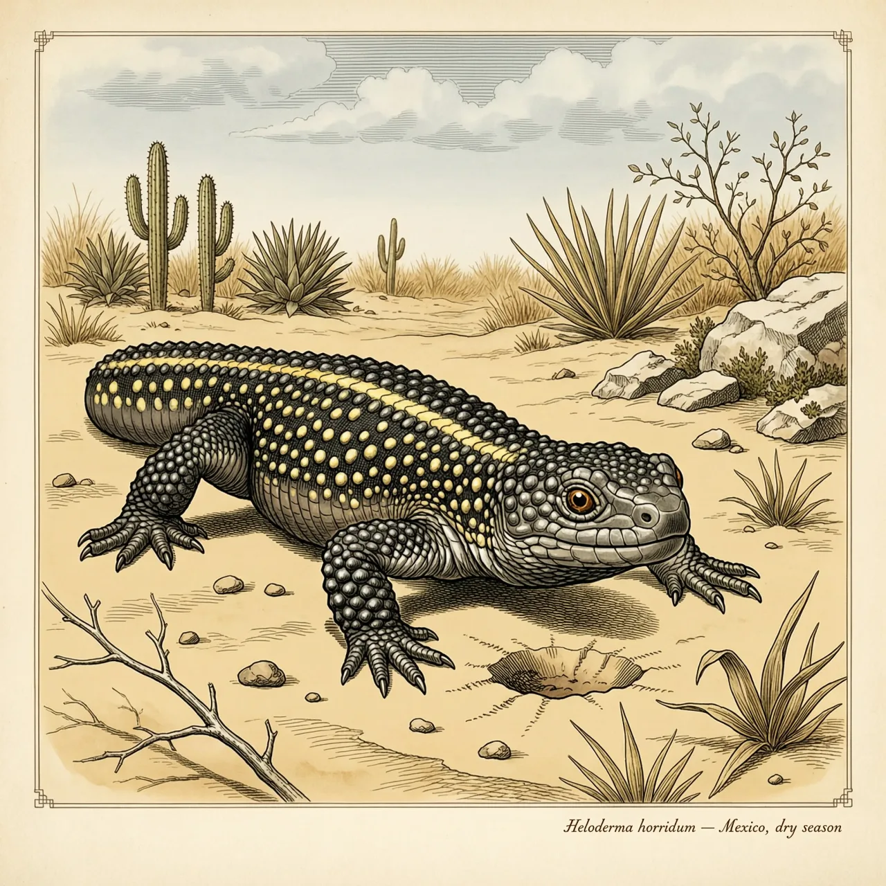
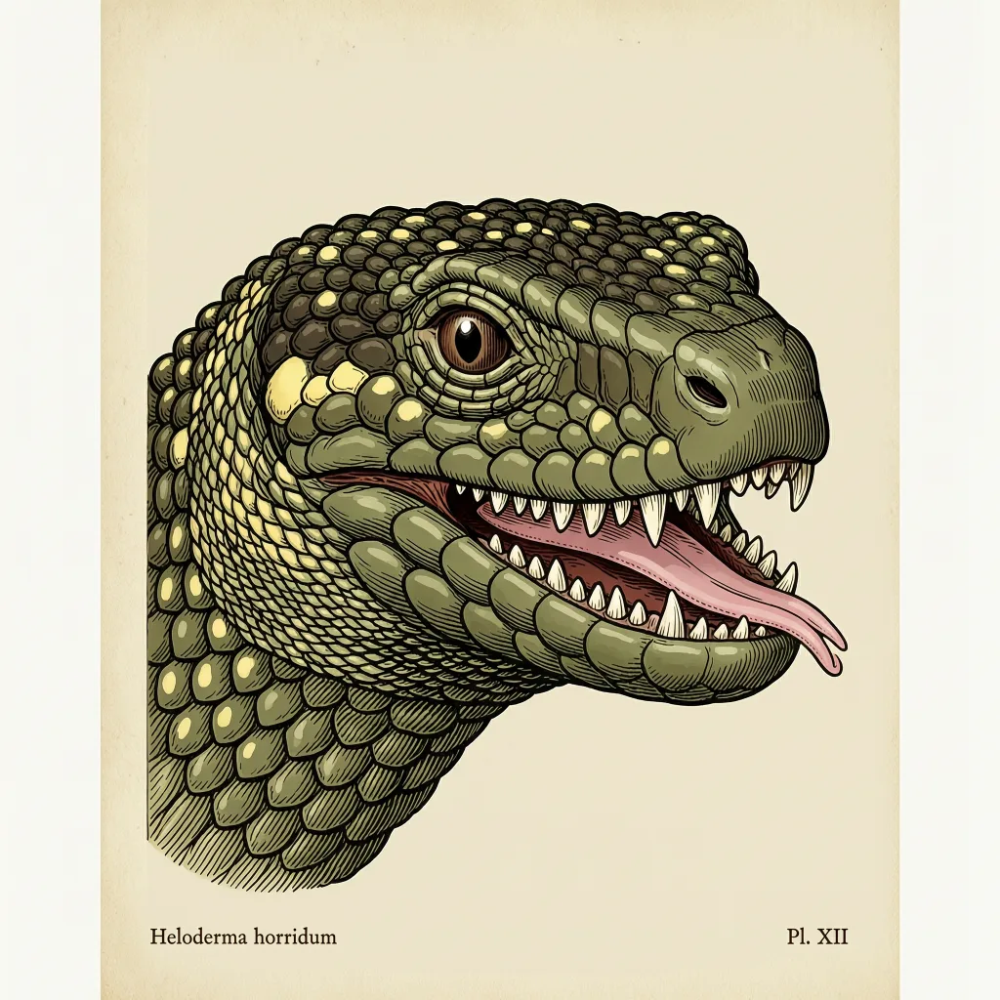

墨西哥毒蜥是毒蜥属中体型较大的一种，分布在墨西哥到危地马拉南部的干旱灌丛与热带落叶林。它行动迟缓，却能掘洞、攀矮树，猎物主要是爬行动物和鸟蛋。它的毒液不靠尖牙刺入，而是靠下颌肌肉挤压毒腺，顺齿沟流入口中。毒蜥科的谱系可追溯到白垩纪。
四月到十一月中旬是墨西哥毒蜥在野外的活跃期，但它每天爬上地表的时间只有大约一个小时。它会掘洞，一天里的大部分时间待在洞中。分布沿太平洋一侧从索诺拉州南部延伸到危地马拉西南部，大西洋一侧则有恰帕斯州中部与危地马拉东南部的两处沿海种群。它住的地方以干为主：沙漠、荒漠和干燥疏灌丛、热带落叶林；也有个体在海拔1500米的松树橡树林被记录到。干燥、日照足、地表升温快，一条行动迟缓的蜥蜴不必在地面上耗太久。
墨西哥毒蜥下毒不靠快，靠挤。它的下颌肌肉向下、向后拉，为毒腺压出毒液，毒顺着牙齿上的沟流入口腔，再渗进被咬住的地方。正因如此，它咬住猎物通常不松口，让毒一点点进去——这套打法对冲刺和速度都没有要求，恰好配得上它迟缓的行动。食物主要是爬行动物和鸟类的蛋：蛋在树上，它会攀矮树去够；地面上的爬行动物，咬住之后靠渗进去的毒处理。毒蜥属是目前已知唯一会分泌毒液的蜥蜴属，墨西哥毒蜥在这个属里算大的，比同属的美国毒蜥体型大得多。
多数蜥蜴遇到危险会断尾求生，墨西哥毒蜥不会自断其尾，尾巴一旦断了也不能再生。它这条短尾巴真正的用处是储存脂肪，撑过长达数月的夏眠。防御是同一逻辑：鳞片小、呈串珠状、彼此不重叠，除腹部外大部分鳞下都有骨状真皮垫着——不靠丢掉一段身体换逃命的时间。它辨认气味的动作同样慢：伸出分岔的粉色舌头收集气味，缩回时让舌尖碰上犁鼻器的开口。
